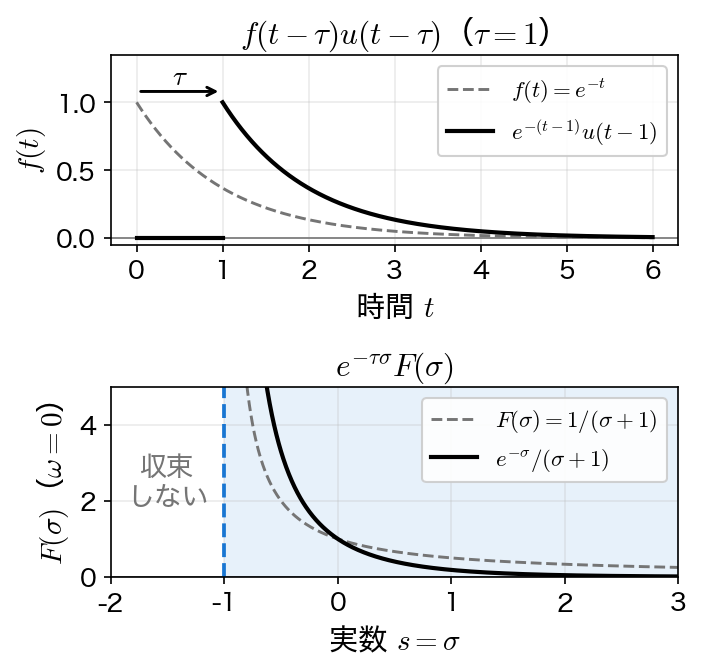
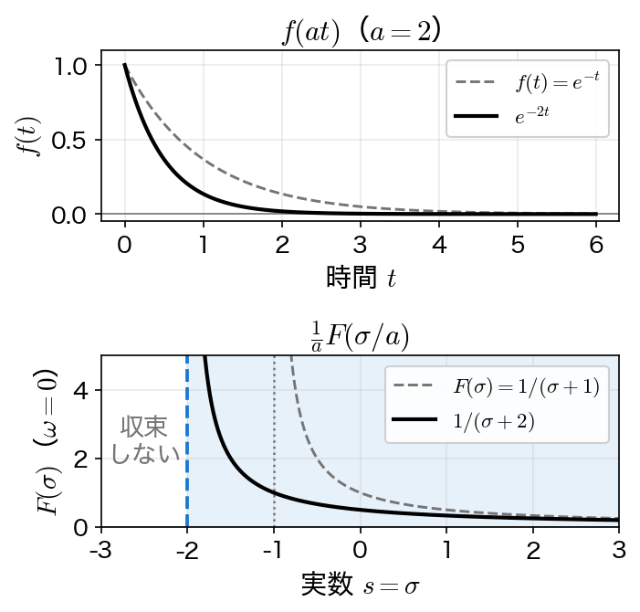
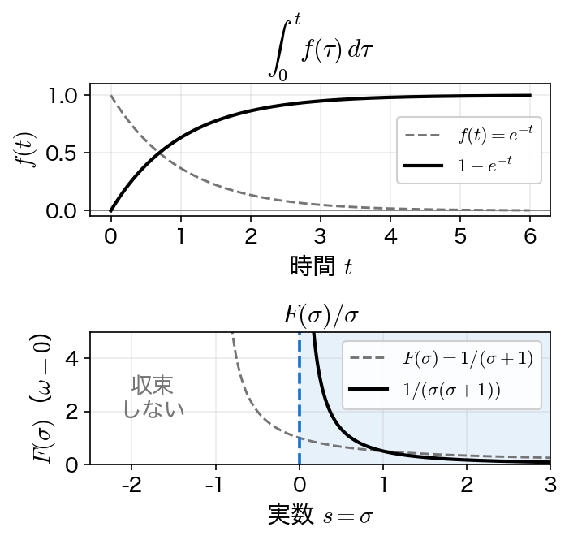
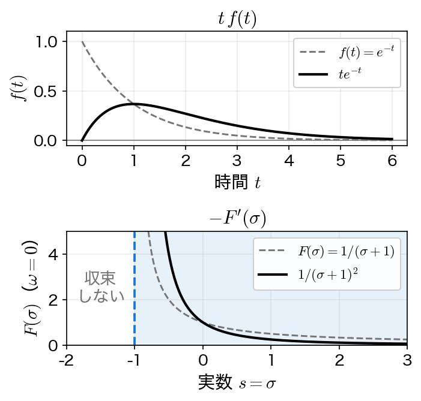
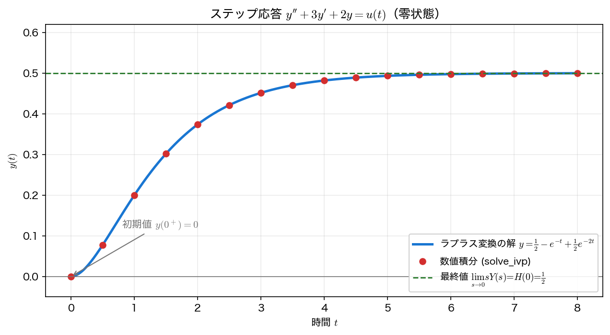

ラプラス変換の公式
本ページでは、ラプラス変換の 公式 を 2 つの表にまとめ、第6回で導いていない 4 つの公式を導く。続いて、逆変換せずに波形の始めと終わりの値を読む 初期値定理・最終値定理 を導き、ステップ応答の定常値を求める。コードは 畳み込み積分と伝達関数 の「sympy の準備」の続きで動く。
公式の表
公式の表（1）
| 公式 | 時間領域 | \(s\) 領域 |
|---|---|---|
| 線形性 | \(af(t)+bg(t)\) | \(aF(s)+bG(s)\) |
| s 推移 | \(e^{-at}f(t)\) | \(F(s+a)\) |
| 微分 | \(f'(t)\) | \(sF(s)-f(0)\) |
| 2 階微分 | \(f''(t)\) | \(s^2F(s)-sf(0)-f'(0)\) |
| 畳み込み | \((f*g)(t)\) | \(F(s)\,G(s)\) |
\(a\), \(b\) は定数である。上の 4 行は第6回で導いた。畳み込みは 畳み込み積分と伝達関数 で導いた。
公式の表（2）
| 公式 | 時間領域 | \(s\) 領域 |
|---|---|---|
| 時間推移（\(\tau\ge0\)） | \(f(t-\tau)\,u(t-\tau)\) | \(e^{-\tau s}F(s)\) |
| スケーリング（\(a>0\)） | \(f(at)\) | \(\dfrac{1}{a}F\!\left(\dfrac{s}{a}\right)\) |
| 積分 | \(\displaystyle\int_0^t f(\tau)\,d\tau\) | \(\dfrac{F(s)}{s}\) |
| \(t\) 倍 | \(t\,f(t)\) | \(-\dfrac{dF(s)}{ds}\) |
上の 3 行は、第6回で表だけを示した。\(t\) 倍は新しい公式である。以下で 1 行ずつ導く。
図は第6回の変換対の図と同じく、上に \(f(t)\)、下に実軸上（\(\omega=0\)、\(s=\sigma\)）の \(F(\sigma)\) を描く。灰色の破線は元の \(e^{-t}\) と \(1/(\sigma+1)\)、青い領域が ROC、青の破線が ROC の境である。
時間推移の導出
\(t<\tau\) では \(u(t-\tau)=0\) なので、積分は \(t=\tau\) から始まる。\(v=t-\tau\) と置くと
となる。入力を \(\tau\) 遅らせる むだ時間 の伝達関数は \(e^{-\tau s}\) である。\(e^{-\tau s}\) は有理関数ではない。

スケーリングの導出
\(v=at\) と置く。\(a>0\) なので積分の範囲は変わらず、\(dt=dv/a\) となる。
\(a=2\) なら \(e^{-2t}\leftrightarrow\dfrac{1}{2}\cdot\dfrac{1}{\sigma/2+1}=\dfrac{1}{\sigma+2}\) である。時間を \(a\) 倍速く進めると、ROC の境も \(a\) 倍になる。図の点線は元の ROC の境 \(\sigma=-1\) で、\(a=2\) では境が \(-2\) に移る。\(a<0\) では \(f(at)\) が負の時間の値を使うので、この形にならない（第6回の ラプラス変換の定義と収束）。

積分の導出
\(g(t)=\displaystyle\int_0^t f(\tau)\,d\tau\) と置く。微分の公式を \(g\) に使い、\(g'(t)=f(t)\)、\(g(0)=0\) を代入すると
を得る。たとえば \(\displaystyle\int_0^t e^{-\tau}\,d\tau=1-e^{-t}\leftrightarrow\dfrac{1}{\sigma(\sigma+1)}\) である。原点に極が加わり、ROC は \(\sigma>0\) に縮む。\(\displaystyle\int_0^t f(\tau)\,d\tau=(f*u)(t)\) なので、畳み込み定理からも \(F(s)\cdot\dfrac{1}{s}\) が出る。

\(t\) 倍の導出
定義の両辺を \(s\) で微分する。\(t\) を固定すると \(\dfrac{d}{ds}e^{-st}=-t\,e^{-st}\) なので
となる。たとえば \(F(s)=\dfrac{1}{s+1}\) から \(-\dfrac{dF}{ds}=\dfrac{1}{(s+1)^2}\)、つまり \(te^{-t}\) である（第6回の重極）。ROC は変わらない。微分と積分を入れ替えてよい条件には立ち入らない。

初期値定理・最終値定理
2 つの定理
逆変換しなくても、\(F(s)\) から \(f(t)\) の始めと終わりの値が読める。
\(f(0^+)\) は、\(t>0\) の側から \(t\to0\) としたときの極限である。\(t=0\) で跳ぶ関数では、跳んだ後の値になる。たとえば \(u(t)\) は \(F(s)=1/s\)、\(sF(s)=1\) なので、\(u(0^+)=1\)、\(\lim_{t\to\infty}u(t)=1\) である。どちらの定理にも、成り立つ条件がある（後述）。
最終値定理を導く
\(f\) は \(t=0\) で跳ばない（\(f(0)=f(0^+)\)）とする。微分の公式 \(\mathcal{L}[f']=sF(s)-f(0)\) より
である。\(s\to0\) とすると \(e^{-st}\to1\) なので
となる。両辺の \(f(0^+)\) が消えて、最終値定理が残る。極限 \(s\to0\) を積分の中に入れてよいのは、\(f\) が一定の値に落ち着くときである（条件は後述）。
初期値定理を導く
同じ式で、\(s\) を実数のまま \(s\to\infty\) とする。
\(t>0\) では \(e^{-st}\to0\) なので、右辺の積分は \(0\) に近づく。よって \(\displaystyle\lim_{s\to\infty}sF(s)=f(0^+)\) である。\(u(t)\) のように \(t=0\) で跳ぶ関数（\(t<0\) では \(0\) とみなす）でも、2 つの定理は成り立つ。その扱いには立ち入らない。
初期値定理の条件
初期値定理は、\(f(t)\) が \(t=0\) にインパルス \(\delta(t)\) を含まないときに使える。\(F(s)\) が有理関数なら、厳密プロパー（分子の次数が分母の次数より低い、第6回）のときにあたる。
反例は \(F(s)=\dfrac{s}{s+1}=1-\dfrac{1}{s+1}\leftrightarrow\delta(t)-e^{-t}\) である（第6回）。この例では \(f(0^+)=-1\) なのに、\(sF(s)=\dfrac{s^2}{s+1}\to\infty\) となる。
最終値定理の条件
最終値定理は、\(f(t)\) が \(t\to\infty\) で一定の値に落ち着くときに使える。\(F(s)\) が有理関数なら、\(sF(s)\) の極がすべて左半面にあるときにあたる。
- 反例：\(F(s)=\dfrac{1}{s^2+\omega^2}\leftrightarrow\dfrac{\sin\omega t}{\omega}\)。形式的には \(\displaystyle\lim_{s\to0}sF(s)=0\) だが、\(f(t)\) は振動を続けて極限をもたない。\(sF(s)\) の極 \(\pm i\omega\) が虚軸上にある。
- \(F(s)\) の原点の単純な極は、\(s\) を掛けると消えるので、あってよい。
- 右半面に極があれば、\(f(t)\) は発散する（「ステップ応答の定常値」の例）。
むだ時間 \(e^{-\tau s}\) を含む \(F(s)\) は有理関数でないので、極だけでは判定できない。本講義で扱う \(F(s)\) は、すべて有理関数である。
例：\(Y(s)=1/\{s(s+1)\}\)
\(sY(s)=\dfrac{1}{s+1}\) に 2 つの定理を使う。
\(sY(s)\) の極は \(-1\) だけで左半面にあるので、最終値定理が使える。\(Y(s)\) は厳密プロパーなので、初期値定理も使える。確かめると、積分の公式より \(y(t)=\displaystyle\int_0^t e^{-\tau}\,d\tau=1-e^{-t}\) で、\(y(0)=0\)、\(y(\infty)=1\) である。
Y = 1 / (s * (s + 1))
sY = sp.simplify(s * Y)
print("sY =", sY)
print("y(t) =", Linv(Y))
print("初期値 lim s->oo sY =", sp.limit(sY, s, sp.oo))
print("最終値 lim s->0 sY =", sp.limit(sY, s, 0))
sp.simplify(s * Y)で \(s\) を約分する。sp.limit(式, s, sp.oo)は \(s\to\infty\) の極限、sp.limit(式, s, 0)は \(s\to0\) の極限を計算する。
ステップ応答の定常値
ステップ応答を求める
第6回と同じ左辺の微分方程式に、零状態からステップ入力を加える。
第6回は入力 \(0\)・初期値ありの零入力応答で、今回は入力あり・初期値 \(0\) の零状態応答である。十分時間が経ったときに出力が落ち着く値 \(\displaystyle\lim_{t\to\infty}y(t)\) を 定常値 と呼ぶ。定常値を、逆変換せずに求めたい。
伝達関数と \(Y(s)\)
零状態で両辺を変換すると \((s^2+3s+2)\,Y(s)=X(s)\) である。よって
となる。\(H(s)\) の極 \(-1\), \(-2\) は左半面にあり、システムは安定である。入力 \(X(s)=1/s\) が、原点の極を足す。
最終値定理で定常値を求める
\(sY(s)=H(s)\) の極 \(-1\), \(-2\) は左半面にあるので、最終値定理が使える。
\(H(0)\) を DC 利得（直流利得）と呼ぶ。一定の入力に対する出力の倍率である。一般に、\(H(s)\) が安定なら、ステップ応答の定常値は \(H(0)\) になる。畳み込み積分と伝達関数 の 2 次系の終値 \(1\) も、\(H(0)=\omega_n^2/\omega_n^2=1\) である。
不安定なら \(H(0)\) にならない
\(H(s)=\dfrac{1}{s-1}\) は \(H(0)=-1\) だが、極 \(+1\) が右半面にある。
部分分数は、両辺に \(s(s-1)\) を掛けた \(1=A(s-1)+Bs=(A+B)s-A\) の係数を比べて、\(A=-1\), \(B=1\) と求めた。ステップ応答は発散し、\(-1\) には落ち着かない。\(H(0)\) を定常値と読んでよいのは、\(sY(s)\) の極がすべて左半面にあると確かめた後である。
部分分数に分ける
定常値だけでなく、波形 \(y(t)\) 全体も求める。
両辺に \(s(s+1)(s+2)\) を掛けて、右辺を \(s\) について整理する。
両辺の係数を比べて解く。
表で戻すと \(y(t)=\dfrac{1}{2}-e^{-t}+\dfrac{1}{2}e^{-2t}\) である。\(t\to\infty\) で \(y\to\dfrac{1}{2}\) となり、最終値定理と一致する。\(y(0)=\dfrac{1}{2}-1+\dfrac{1}{2}=0\) も満たす。
sympy で確かめる
H = 1 / ((s + 1) * (s + 2)) # 伝達関数
Y = H / s # ステップ入力 X(s)=1/s
print("部分分数:", sp.apart(Y, s))
print("y(t) =", Linv(Y))
print("最終値 lim s->0 sY =", sp.limit(s * Y, s, 0))
print("DC 利得 H(0) =", H.subs(s, 0))
部分分数: 1/(2*(s + 2)) - 1/(s + 1) + 1/(2*s)
y(t) = 1/2 - exp(-t) + exp(-2*t)/2
最終値 lim s->0 sY = 1/2
DC 利得 H(0) = 1/2
H.subs(s, 0) は \(H(s)\) に \(s=0\) を代入して、DC 利得を計算する。部分分数・\(y(t)\)・最終値・DC 利得が、手計算と一致する。
solve_ivp と比べる
\(y''=x-3y'-2y\) を、\(z=[y,\ y']\) の 1 階の連立系に直して数値積分する（第6回と同じ）。
from scipy.integrate import solve_ivp
def rhs(tt, z): # z = [y, y']、入力 x=1
return [z[1], 1.0 - 3*z[1] - 2*z[0]]
tm = np.linspace(0, 8, 9)
num = solve_ivp(rhs, [0, 8], [0.0, 0.0], t_eval=tm,
rtol=1e-10, atol=1e-12).y[0]
ana = 0.5 - np.exp(-tm) + 0.5*np.exp(-2*tm)
print("最大誤差:", f"{np.max(np.abs(num - ana)):.2e}")
\(t>0\) では \(x=u(t)=1\) なので、rhs に 1.0 を入れる。差は数値積分の誤差で、rtol, atol の指定で大きさが変わる（第6回の 逆ラプラス変換と s 平面）。

初期値定理でも \(y(0^+)=\displaystyle\lim_{s\to\infty}sY(s)=\lim_{s\to\infty}H(s)=0\) となり、図と一致する。
まとめ
- 時間推移・スケーリング・積分・\(t\) 倍の 公式 は、置き換え・微分の公式・\(s\) での微分から導ける。
- 初期値定理 \(f(0^+)=\lim_{s\to\infty}sF(s)\) と 最終値定理 \(\lim_{t\to\infty}f(t)=\lim_{s\to0}sF(s)\) で、逆変換せずに始めと終わりの値が読める。初期値定理は \(f\) が \(t=0\) にインパルスを含まないとき、最終値定理は（有理関数なら）\(sF(s)\) の極がすべて左半面にあるときに使える。
- 安定なら、ステップ応答の定常値は DC 利得 \(H(0)\) に等しい。
本講義との接続
第6回・第7回で、ラプラス変換による システムの記述（伝達関数 \(H(s)\)）と 応答の読み方（極・畳み込み・定常値）がそろった。第8回 では、極がすべて 左半面にあるか で 安定性 を判定する見方と、フィードバック制御への応用に進む。そこでは、今回の「極の位置 → 過渡応答」「\(H(0)\) → 定常値」という見方をそのまま使う。